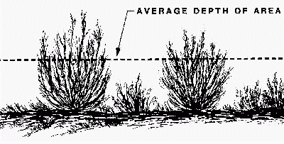

|
|
Fuel Bed Depth |
Fuel bed depth represents the depth of the surface fuel and is a fuel model parameter. Fuel bed depth is sometimes called fuel bed bulk depth. A single fuel bed depth value must be used for a fuel model.
The Rothermel fire spread model calculations are highly sensitive to the fuel bed depth. Fuel bed depth is assumed to be uniform for Rothermel’s fire spread model. It is necessary to estimate a characteristic value for the area. The depth of the fuel bed determined as an output of the planar intercept method (Brown 1974) is called the "average high particle depth." Brown and Albini (1978) showed that for logging slash fuel beds, the fuel bed depth is approximately 63.3% of the average high particle depth. For the special case fuel model, palmetto-gallberry, fuel bed depth is calculated as 2/3 of the P-G Height of Understory variable entered on the worksheet. The option of using two fuel models to describe an area is also available.
|
I/O |
Module |
If |
Notes |
|
Input |
SURFACE |
If Fuel is entered as fuel parameters is selected as an input option. |
If Fuel is entered as fuel models or the special case fuel model, western aspen is selected as an input option, then the appropriate value is used. |
|
Output |
SURFACE |
If Fuel is entered as special case fuel model, palmetto-gallberry is selected as an input option. |
|
|  |